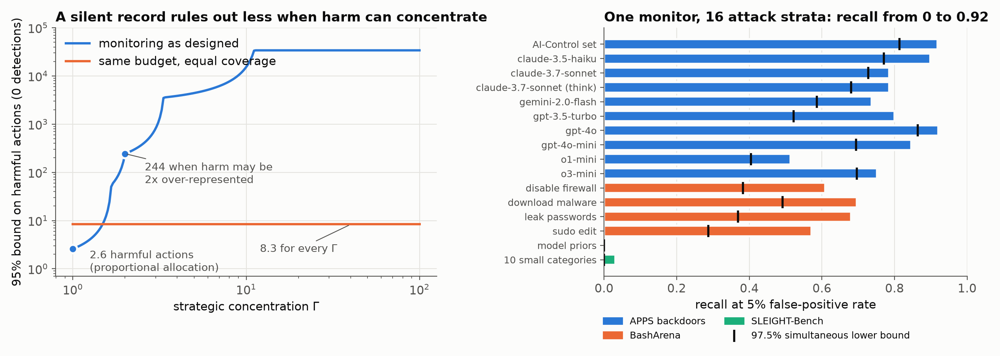
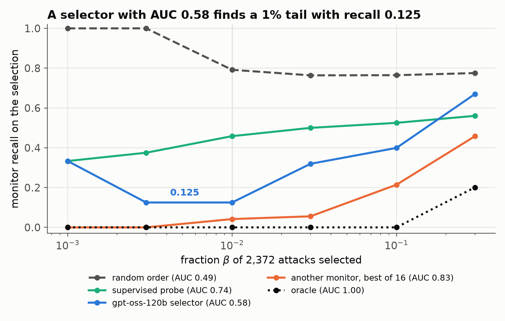
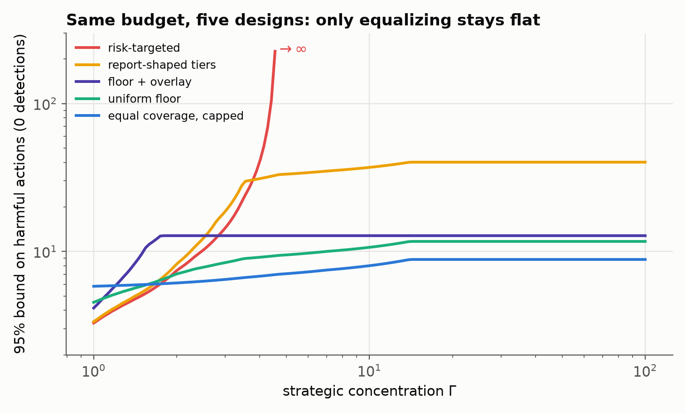
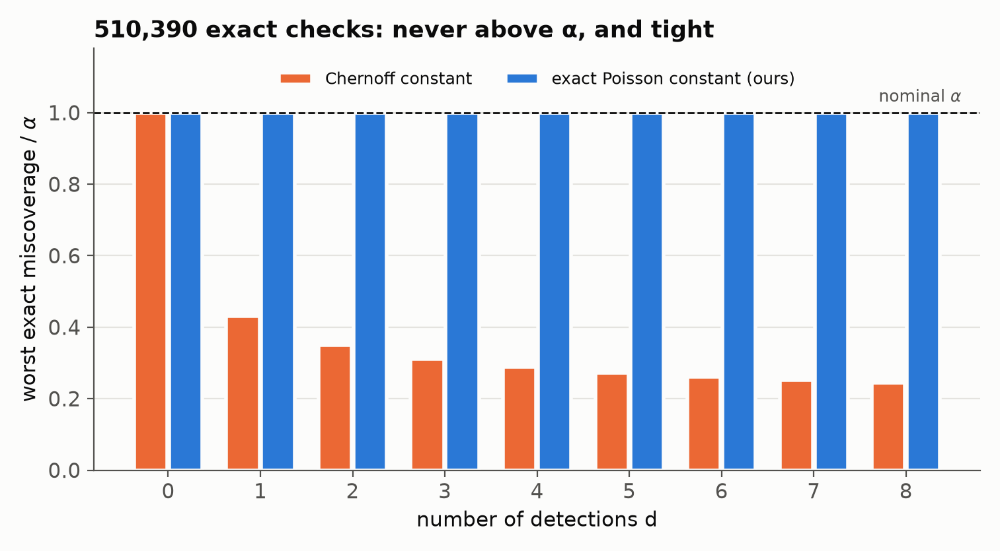

A silent monitor is not a safety proof
AI developers monitor deployed models by sending a sample of traffic to another model, and a record of zero or few flags is read as evidence that harmful behavior is rare. That inference assumes the monitored system cannot tell where oversight is weak. A capable system can: the features that set monitoring intensity are part of the context it acts on. We give confidence bounds on the number of harmful actions that stay valid when the system can see the stratification, and show how to design monitoring so that knowing the policy gives little advantage.

Certificate calculator
Edit the strata, then move Γ: harmful actions may be at most Γ times over-represented in any stratum relative to its traffic share. The chart compares your design with equal effective coverage at the same monitored fraction.
| stratum | traffic share | routing π | recall r | coverage c = πr |
|---|
Zero detections: $U_\alpha(0;\Gamma)=\log(1/\alpha)/\mathrm{LCVaR}_{1/\Gamma}(\kappa)$ with $\kappa_h=-\log(1-c_h)$.
With $d\ge1$ detections the bound is $\lambda_\alpha(d)/\mathrm{LCVaR}_{1/\Gamma}(c)$, where $\lambda_\alpha(d)$ is the exact Poisson
upper limit. The same numbers come from gammacert.certificate(pi, recall, shares, gamma, detections).
The idea
A harmful unit in stratum $h$ is detected with probability $c_h=\pi_h r_h$: it must be routed to the monitor and recognized. A strategic system can move harm toward strata where $c_h$ is small. If harm may be at most $\Gamma$ times over-represented anywhere, a silent record certifies
$$U_\alpha(0;\Gamma)=\frac{\log(1/\alpha)}{\mathrm{LCVaR}_{1/\Gamma}(\kappa)},$$the detection hazard averaged over the least-covered fraction $1/\Gamma$ of traffic. The bound needs only the monitor's own randomization, no model of the system's behavior.
Partial visibility. When the system only partly infers the policy, the certificate depends on the extreme lower tail of its posterior detection probability. AUC, guessing accuracy and every summary that is Lipschitz in total variation cannot bound that tail.
Robust design. Equalizing effective coverage is minimax optimal once Γ is large enough, and a hidden randomized floor $\pi_0\ge(1-\alpha^{1/K})/r_{\min}$ certifies at most $K$ harmful actions whatever the system knows.
Campaigns. Subsampling cannot rule out one catastrophic action unless coverage is nearly complete, but it can bound the probability that a multi-step campaign escapes interruption.
Measurements
We scored 4,058 transcripts from APPS backdoors, BashArena and SLEIGHT-Bench with seventeen open-weight monitor configurations.



BibTeX
@software{gammacert2026,
title = {gammacert: Γ-robust bounds for strategic AI oversight},
author = {{The gammacert authors}},
year = {2026},
url = {https://github.com/ziwaa-se/gammacert}
}